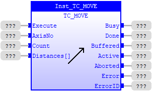
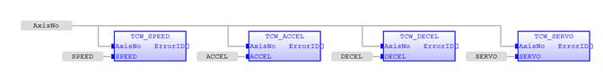
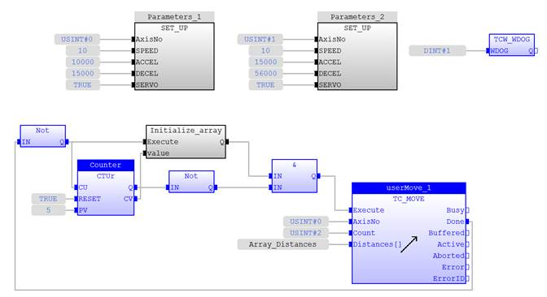
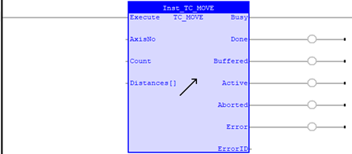

Motion Function
Issues a new MOVE motion request for the axis specified by 'AxisNo'.
|
Execute : BOOL; |
Rising edge requests execution |
|
AxisNo : USINT; |
Axis number of base axis |
|
Count : USINT; |
Number of axes to be interpolated together |
|
Distances[] : LREAL; |
Array containing the distances to be moved, one per axis |
|
Busy : BOOL; |
TRUE if function is running |
|
Done : BOOL; |
TRUE when function has completed normally |
|
Buffered : BOOL; |
TRUE when motion command is in NTYPE buffer |
|
Active : BOOL; |
TRUE when motion command is in MTYPE buffer |
|
Aborted : BOOL; |
TRUE if function terminates due to CANCEL |
|
Error : BOOL; |
TRUE if a program error is detected |
|
ErrorID : UINT; |
Returned error number |
When the execute input changes from FALSE to TRUE (rising edge), the function block attempts to load the motion command into the required axis buffer. If the buffer is unavailable, the function re-tries on each PLC scan. Once the motion command has been loaded, the appropriate outputs will indicate the state of the motion; in NTYPE, MTYPE, aborted (Cancelled) or done.
A programming error, such as parameter out of range, will set the Error output and return an error ID number. For the Error ID reference, see the Trio Programming error list.
The function must be in the processing scan and the Execute input TRUE for the outputs to correctly show the status of the move.
The execution timing diagrams for TC_MOVE(1/2/3) of one axis, both in an uninterrupted situation and when it is aborted by TC_CANCEL during move, are shown below. The first timing diagram describes the sequence of one TC_MOVE instance. The second is with 2 TC_MOVE instances.
Execution timing diagram of one TC_MOVE instance

Execution timing diagram of two TC_MOVE instances
Inst_TC_MOVE( Execute (*BOOL*) , AxisNo (*USINT*) , Count (*USINT*) , Distances[] (*LREAL*) );

An X-Y plotter can write text at any position within its working envelope. Individual characters are defined as a sequence of moves relative to a start point so that the same commands may be used regardless of the plot origin. The command subroutine for the letter ‘M’ might be:
SET_UP function block:

Initialize_array function block:
case value of
1:
Array_Distances[0] := 0;
Array_Distances[1] := 12;
2:
Array_Distances[0] := 3;
Array_Distances[1] := -6;
3:
Array_Distances[0] := 3;
Array_Distances[1] := 6;
4:
Array_Distances[0] := 0;
Array_Distances[1] := -12;
else
Array_Distances[0] := 0;
Array_Distances[1] := 0;
end_case;
if( execute ) then
Q := true;
else
Q := false;
end_if;


TC_MOVE1 , TC_MOVE2 , TC_MOVE3 , TrioBASIC Errors